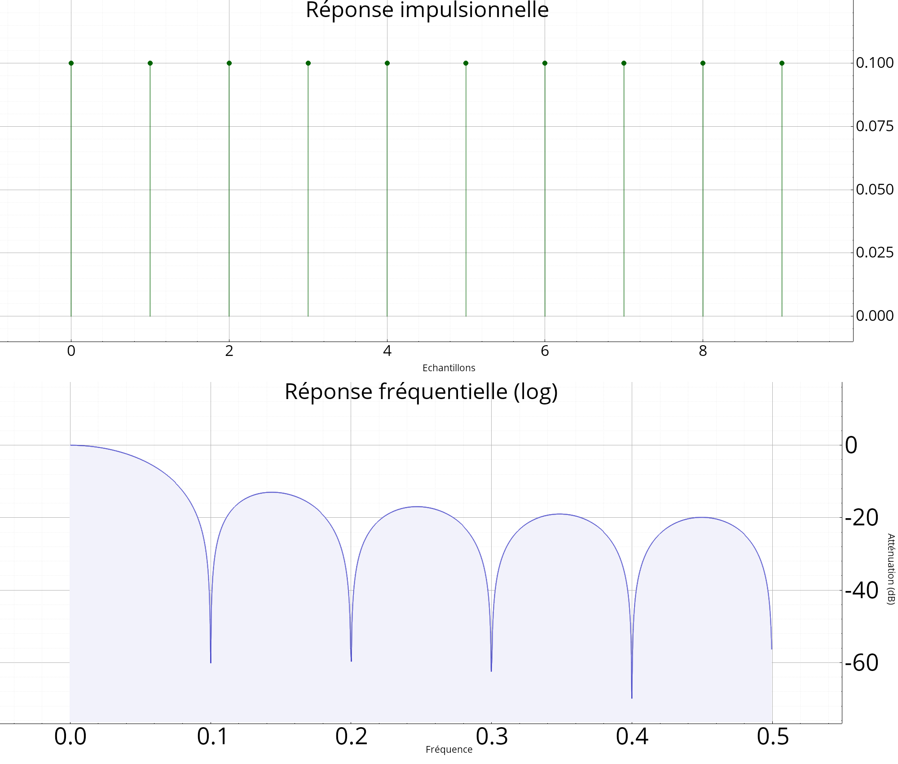

Analysis of linear filters
These functions can help to analyze the different responses of a LTI filter. Below are some responses that are possible to plot:

Types
using dsp::filter::FilterAnalysis = typedef tsdf::AnalyseLIT
Result of a linear filter analysis.
Functions
void verifie_frequence_normalisee(float f, cstring msg="")
Check validity of a normalized frequency.
tuple<Vecf, Vecf> frmag(const FRat<T> &h, unsigned int npts=1024)
Magnitude of a FIR or IIR filter.
Veccf repfreq(const FRat<T> &h, const Vecf &fr)
Frequency response of a FIR or IIR filter.
Vecf repimp(const FRat<T> &h, int npts=-1)
Impulse response.
tuple<Vecf, Vecf> frphase(const FRat<T> &h, int npts=1024)
Phase of FIR and IIR filters.
tuple<Vecf, Vecf> frgroup(const FRat<T> &h, int npts=1024)
Computes the group delay.
dsp::view::Figures dsp::filter::plot_filter(const FRat<T> &h, bool complete=false, float fs=1)
Analysis of a linear filter (plot the different responses).
void plot_plz(Figure &fig, const FRat<T> &h, bool cmap=false)
Poles / zeros diagram.
void plot_plz(Figure &fig, const Vector<T> &h, bool cmap=false)
The same (from the coefficients of a FIR filter).
tuple<Vecf, Vecf> firamp(const Vecf &h, int L=1024, bool symetrical=true)
Amplitude response of a symetrical or antisymetrical FIR filter (linear phase).
float fir_delay(int N)
Computes the delay of a linear phase FIR filter.
FilterAnalysis filter_analysis(const FRat<T> &h, bool with_plots)
Analyse d'un filtre linéaire invariant dans le temps (d'après la fonction de transfert).
FilterAnalysis filter_analysis(const Vector<T> &h, bool with_plots)
Idem (from the coefficients of a FIR filter).
static int fir_type(const Vecf &h)
Compute the type (I, II, III ou IV) of a FIR filter with linear phase. If the coefficients are not symetrical nor anti-symetrical, returns -1.